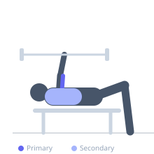
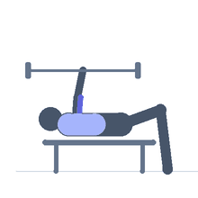

Exercise guide / Close-Grip Bench Press
Close-Grip Bench Press
The close-grip bench press is a barbell pressing variation using a narrower grip (shoulder-width or slightly inside), which reduces pectoral involvement and shifts the primary load to the triceps. It allows heavy triceps training with more load than isolation exercises and is a staple accessory for pressing strength development.
Primary muscles
triceps long head
triceps lateral head
triceps medial head
Secondary muscles
deltoid anterior
pectoralis major sternal
Stabilizers
supraspinatus
Equipment
Standard Barbell
Flat Bench


Starting position
- Lie on a flat bench. Grip the barbell at shoulder width or slightly inside with an overhand grip. Unrack and hold with arms extended over the mid-chest.
Setup
- Do not go excessively narrow — shoulder-width grip is sufficient. Going too narrow increases wrist stress without benefiting tricep isolation.
Steps
- Lower the bar to the lower chest keeping elbows tucked close to the torso.
- Touch the chest and immediately press back to full arm extension.
- Re-rack after the final rep.
Coaching cues
- Keep elbows close to the body — tuck them in toward the ribs
- Press the bar in a straight line upward
Breathing
- Inhale on descent, exhale on the press.
Range of motion
- Full extension at top, bar touches lower chest at bottom.
Tempo
- 2-1-1-0
Common mistakes
- Gripping too narrow — inside shoulder width increases wrist discomfort
- Flaring the elbows wide, negating the tricep emphasis
Safety
- Use a spotter or rack safety catches
- Keep thumbs wrapped around the bar
Training
- strength: 4–8 reps
- hypertrophy: 8–12 reps
- strength: 3–5 sets
- hypertrophy: 3–4 sets
- Rest: {'strength': 180, 'hypertrophy': 90}